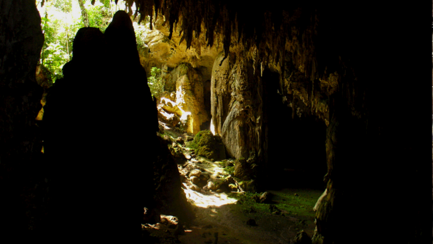
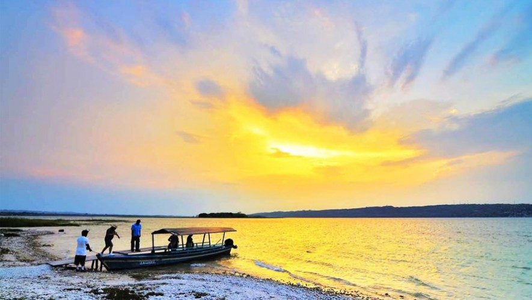
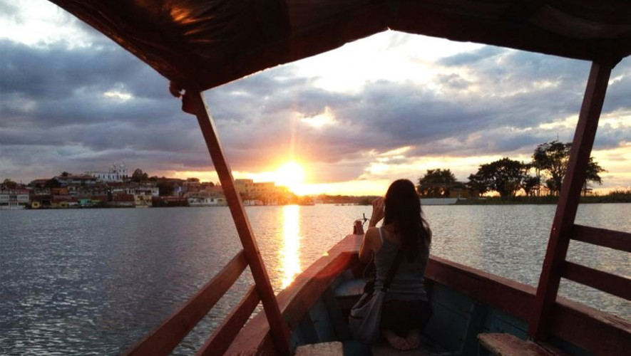

Lugares Turisticos
Se encuentra dentro de un esplendoroso bosque, es refugio natural de una amplia variedad de animales, plantas y árboles. Al caminar por los impresionantes puentes colgantes y los serpenteantes senderos repletos de exuberante vegetación, tendrás la oportunidad de tener un contacto directo con la naturaleza. La máxima atracción es el puente colgante que te hace atravesar la selva de Petén.
Estas cuevas descubiertas en 1979 son un sitio que tienes que conocer, cuenta con mucha historia ya que en ellas se encontraron pinturas rupestres acerca de los sacrificios, y de ahí surge uno de sus significados: "pinturas sobre área húmeda". Sin duda alguna, es un lugar místico, tiene muchas pinturas en las paredes y se cree que para los antiguos mayas se trataba de la entrada al inframundo.

Este impresionante lago rodea la isla de Flores y cuenta con muchísimas actividades que puedes disfrutar. Para conocer este lago lo puedes hacer en lancha, la cual te dará un tour por toda el área, también puedes nadar, realizar kayak, bananas float y mucho más. Existen muchos hoteles y restaurantes, ya que sus playas son claras y es un destino intermedio hacia Tikal.

Este es un hermoso lugar lleno de vida nocturna y lugares espectaculares. Esta isla que se encuentra rodeada del Lago Petén Itzá y se caracteriza por ser pintoresca y por tener muchos atractivos turísticos que hacen de este sitio algo único. Restaurantes con vista al lago y más, la isla de Flores tiene muchas cosas que ofrecerte.

Y cómo no incluir este hermoso lugar, con más de 3,000 estructuras arqueológicas, Tikal se ha convertido en un símbolo de la cultura maya y de Guatemala. Con sus hermosas estructuras, áreas verdes, diversa flora y fauna, este es un lugar que se debe conocer. Además de contar con templos, en sus miradores puedes observar toda la selva de Petén siendo un momento majestuoso que de seguro nunca olvidarás.